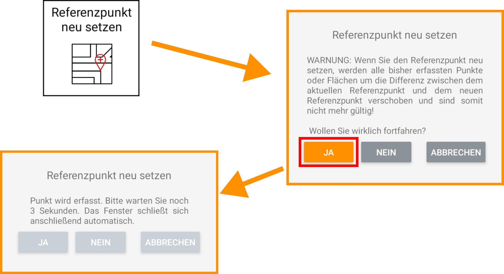

Referenzpunkt neu setzen
Referenzpunkt neu setzen

Diese Funktion erlaubt eine Neuermittlung des Referenzpunkts.
Warnung: Setzen des Referenzpunktes
Wenn Sie den Referenzpunkt neu setzen, werden alle bisher erfassten und eingestellten Punkte oder Flächen um die Differenz zwischen dem aktuellen Referenzpunkt und dem neuen Referenzpunkt verschoben und sind somit nicht mehr gültig! Wenn die Basisstation neu gestartet wurde oder eine neue Positionserfassung durchgeführt wurde, kann durch erneutes Setzen des Referenzpunktes an der Stelle des alten Referenzpunktes die Arbeitsfläche wieder zur Baustelle synchronisiert werden.